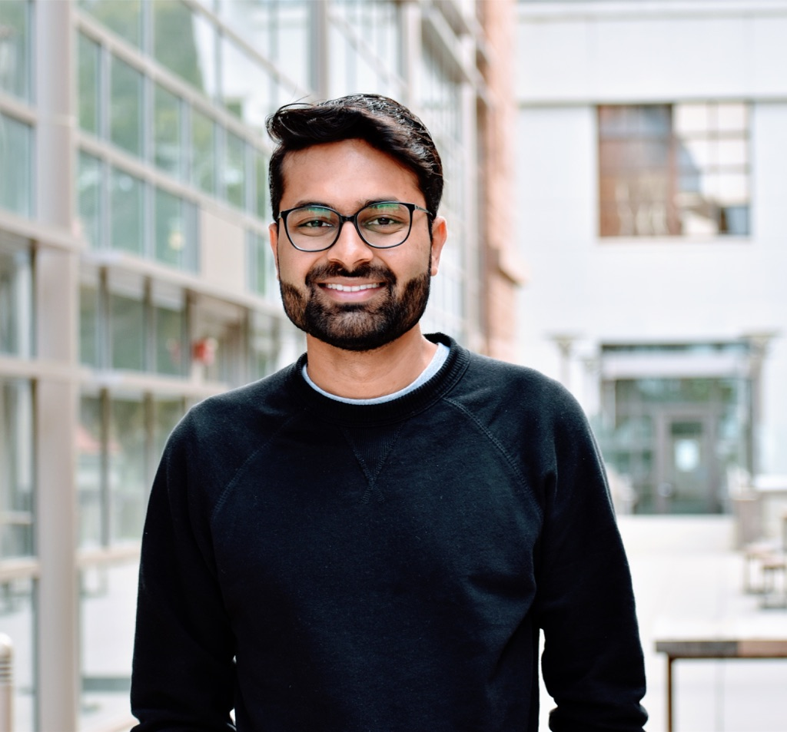
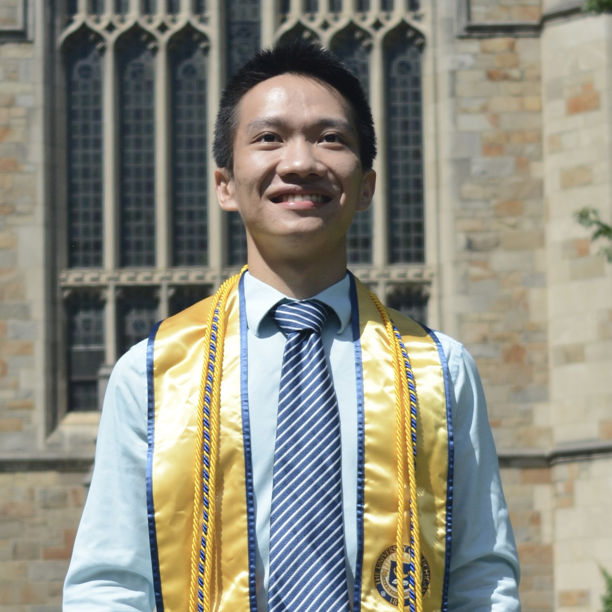

Principle Investigator
 Prof. Somil Bansal
Prof. Somil Bansal
I am an assistant professor in the ECE Department at the University of Southern California, where I lead the Safe and Intelligent Autonomy lab. Before joining USC, I spent a year as a Research Scientist at Waymo (formerly known as Google’s Self-Driving Car project).
PhD Students

Javier Borquez
I am an assistant professor in the ECE Department at the University of Southern California, where I lead the Safe and Intelligent Autonomy lab. Before joining USC, I spent a year as a Research Scientist at Waymo (formerly known as Google’s Self-Driving Car project).
Kaustav Chakraborty
Kaustav is a Ph. D. student at the University of Southern California. He received his Master's degree in Robotics at the University of Michigan, Ann Arbor and Bachelor's in Mechanical Engineering from VIT University, India. His research interests include autonomous navigation, perception and reasoning in robotics.(P.S. He can be easily distracted by discussions about soccer and culinary exploits!)

Hao Wang
Hao recevied his Bachelor Degrees in Computer Science and Mechanical Engineering from the Univeristy of Michigan, Ann Arbor. He is interested in control theory, machine learning, and safety-critical robotics.
Master Students
Kevin Lin
MS in Computer Science at Stanford; previously, EECS at UC Berkeley. I did research at Waabi, advised by Raquel Urtasun, and at
Berkeley Artificial Intelligence Research with members of Pieter Abbeel's Robot Learning Lab.
I also do research with Somil Bansal.
Undergraduate Students
Jay Park
I am an assistant professor in the ECE Department at the University of Southern California, where I lead the Safe and Intelligent Autonomy lab. Before joining USC, I spent a year as a Research Scientist at Waymo (formerly known as Google’s Self-Driving Car project).
Vishnu Velayuthan
I am an assistant professor in the ECE Department at the University of Southern California, where I lead the Safe and Intelligent Autonomy lab. Before joining USC, I spent a year as a Research Scientist at Waymo (formerly known as Google’s Self-Driving Car project).
Kyle Woo
I am an assistant professor in the ECE Department at the University of Southern California, where I lead the Safe and Intelligent Autonomy lab. Before joining USC, I spent a year as a Research Scientist at Waymo (formerly known as Google’s Self-Driving Car project).
Tianhao (Stan) Wu
I am an assistant professor in the ECE Department at the University of Southern California, where I lead the Safe and Intelligent Autonomy lab. Before joining USC, I spent a year as a Research Scientist at Waymo (formerly known as Google’s Self-Driving Car project).
Collaborators
Jason Choi
Jason am a Ph.D. student in Mechanical Engineering at UC Berkeley, being co-advised by Professor Koushil Sreenath (Hybrid Robotics Lab) and Professor Claire Tomlin (Hybrid Systems Lab).
Ayush
I am an assistant professor in the ECE Department at the University of Southern California, where I lead the Safe and Intelligent Autonomy lab. Before joining USC, I spent a year as a Research Scientist at Waymo (formerly known as Google’s Self-Driving Car project).
Alumni
Albert Lin (NSF REU, current undergraduate student in Computer Science at Princeton)
Kensuke Nakamura (NSF REU, current undergraduate student in Mechanical Engineering at Princeton)